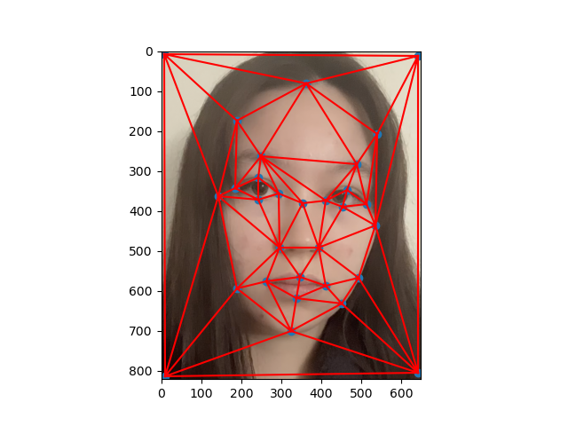
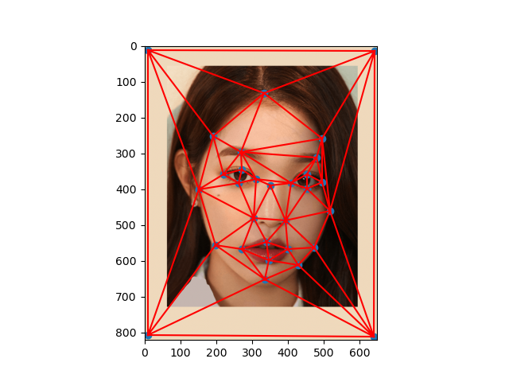
In this part, I use the ginput function to assign points to both images that i want to morph together. I used a photo of myself and an idol named Wonyoung. In this section only, I call the Delaunay function on the points for each image to get a Delaunay triangulation unique to that photo. These trianguulations are made just for this part -- I will instead be using a Delaunay triangulation of the **mean** points of both images for part 2.
Three key lessons that caused me to struggle with this problem were that: 1) The images have to be very aligned (looking in the same direction, same angle, same face size, etc), 2) the points have to be labeled in the same order for both images (ex. if point 4 is on my eye, point 4 also has to be on Wonyoung's eye as well, and 3) I need to include the corners of the photos in my point set. Even though both im1 and im2 had the same photo size (ex. 750x900), the face sizes were different (i.e. Wonyoung was zoomed in so her face was bigger), so my morph didn't look that good. To mitigate this issue, I added a border to Wonyoung's photo and shrinked the photo inside the border so that our face sizes would be more similar.
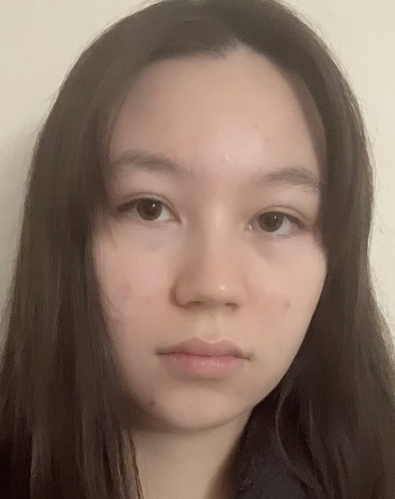
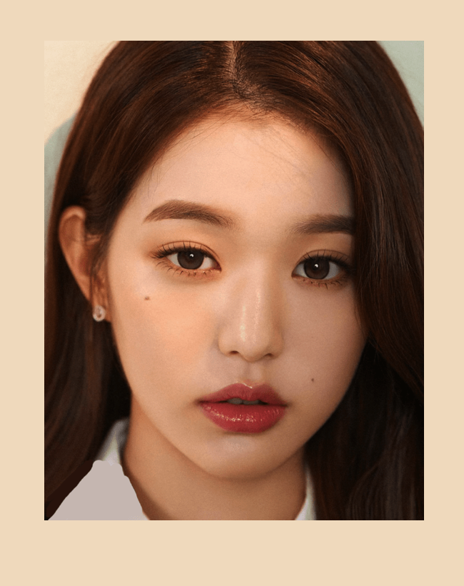
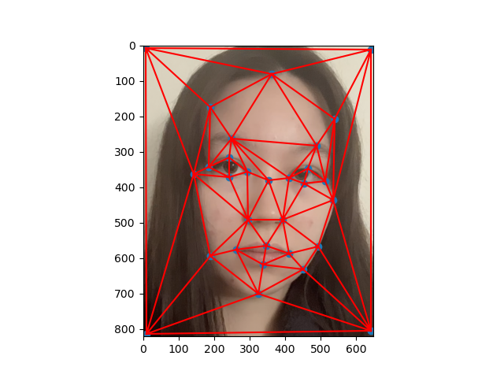
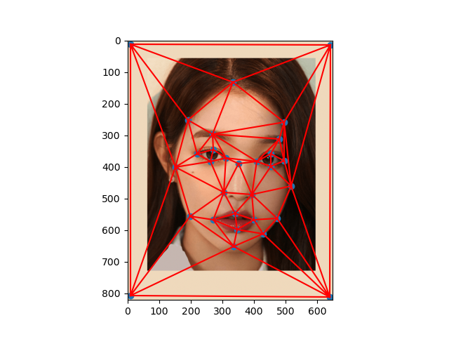
In this part, I create one singular morph -- an image that is exactly halfway between im1 and im2. This can be done with a simple crossblur equation:
(1-t) * im1 + t * im2
Where t is the blur factor, between 0 and 1. In this case, I want a halfway face so I set t to 0.5. A vanilla morph (without any transformations) would look like:
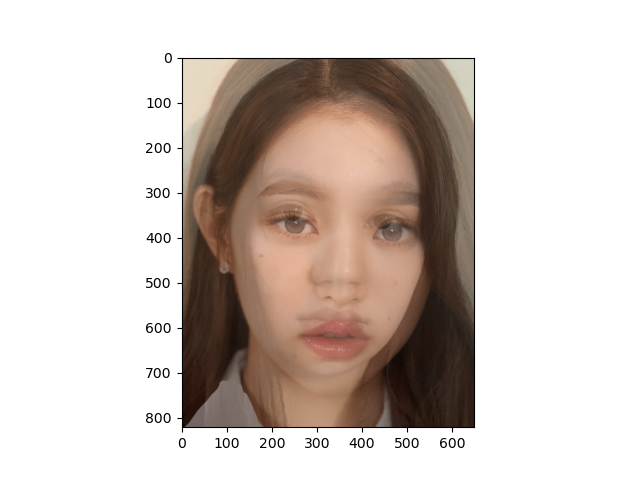
However, this halfway face just looks like two faces overlayed. It doesn't actually transform my face onto a mean face. Therefore, I calculate a mean face and then transform my face onto the mean face. Then, I tranform the image 2 face onto the mean face, and crossblur the resulting transformed images using the crossblur equation. Therefore, instead of using individual Delaunays, I take an average of image 1 and image 2's points and average them to create a Delaunay triangulation based on the mean points.
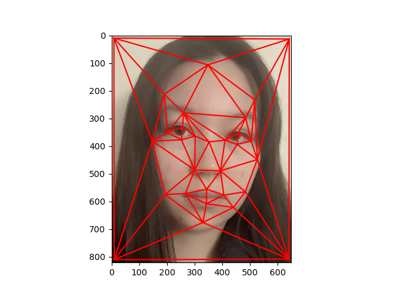
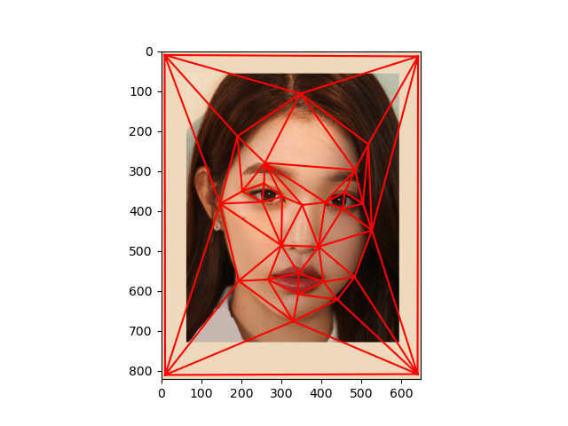
Now I have both the image 1 points and the mean points, and the mean triangles. For each triangle, I get the relevant points values of that triangle for both image 1 and the mean image. Mathematically, an affine matrix multiplied by the original points warps the points to the mean points. However, according to the lecture an inverse warp is better, so instead we warp the mean points onto the original points. Then, I average the colors via bilinear interpolation. Initially I used polygon as the spec suggested, but that gave my photos white streaks, so I used interp2d instead.
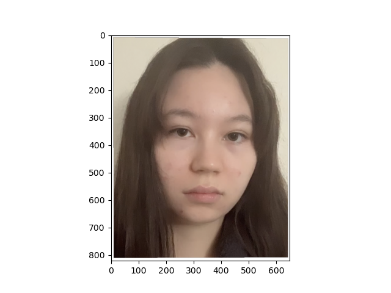
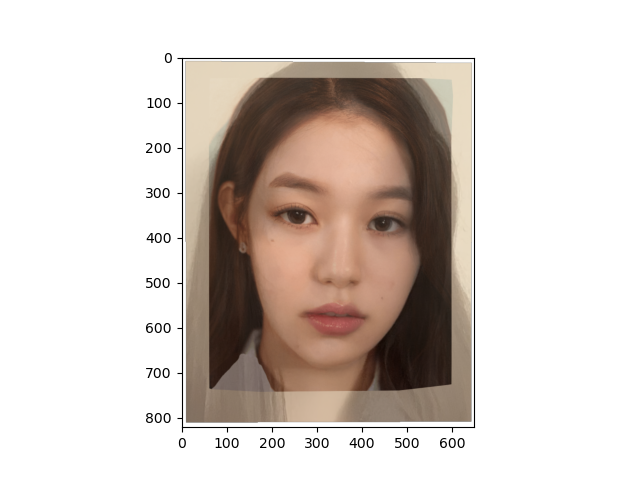
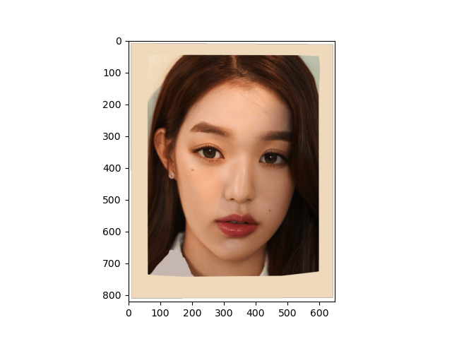
In this project I played around with faces. One key takeaway is that face morphing doesn't use some fancy technology like neural networks or ML algorithms -- in fact, it is just linear algebra. I also learned that in order for face morphing to work well, I need two images that are aligned or else it doesn't work that well.